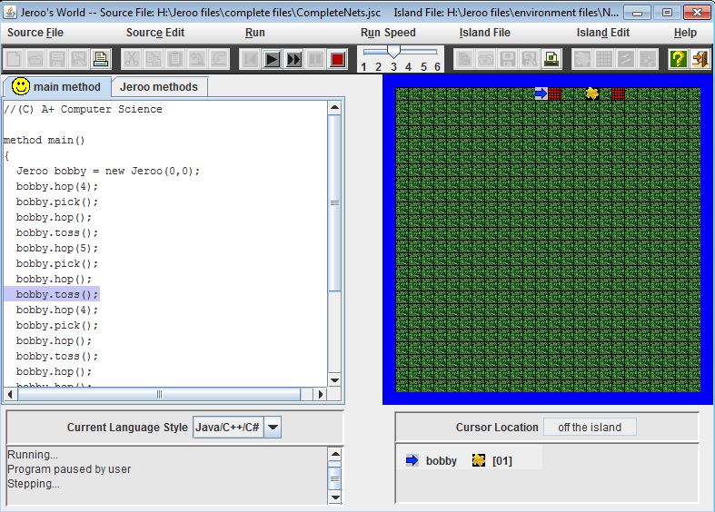
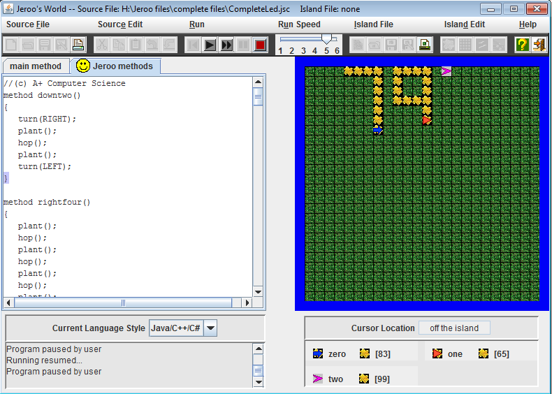

Jeroo Projects
Unit 1

Description:
To learn how to perform basic actions in jeroo, a java program meant for teaching basic code to students. We had to perform simple tasks, like picking up flowers, or hopping around water.
Concepts learned:
- How to enter basic commands in jeroo- For moving through simple mazes, or performing tasks, we learned how to make jeroos perform commands in the main method.
- How to create jeroos (instantiation)- We needed to be able to create jeroos to perform tasks.
Unit 2

Description:
To learn how to create methods, aside from the main method, to allow us to shorten our code. This allowed us to reduce the size of our main method, and make the code less cluttered. it also allowed us to call actions that needed to be repeated a lot, allowing us to take less time for designing our code.
Concepts learned:
- How to create methods aside from our main method- New methods could be called from any jeroo and reduce the sizes of our main methods
Unit 3

Description:
To learn how to use loops, and conditional statements. These allow us to perform repetitive actions constantly, without having to use copy-and-paste all the time.
Concepts learned:
- How to use "while" loops- These allow a jeroo to perform an action during the entirety of time while condition 'x' is (or isnt) true
- How to use "if" staements- These allow jeroos to perform an action if a condition is true, allowing us to check for specific conditions (like "is there net ahead?")
Unit 4
Description:
To use loops and recursion to allow our programs to complete tasks easily. Recursion is when a loop is able to call itself so it repeats itself multiple times.
Concepts learned:
- How to use recursion- which eliminates the need for repeating code sections over and over again